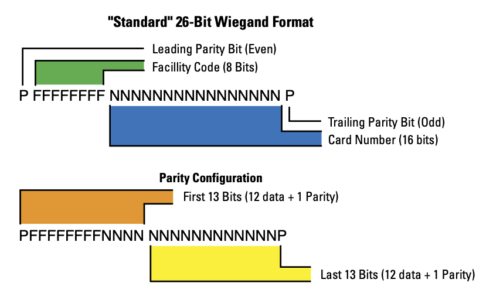
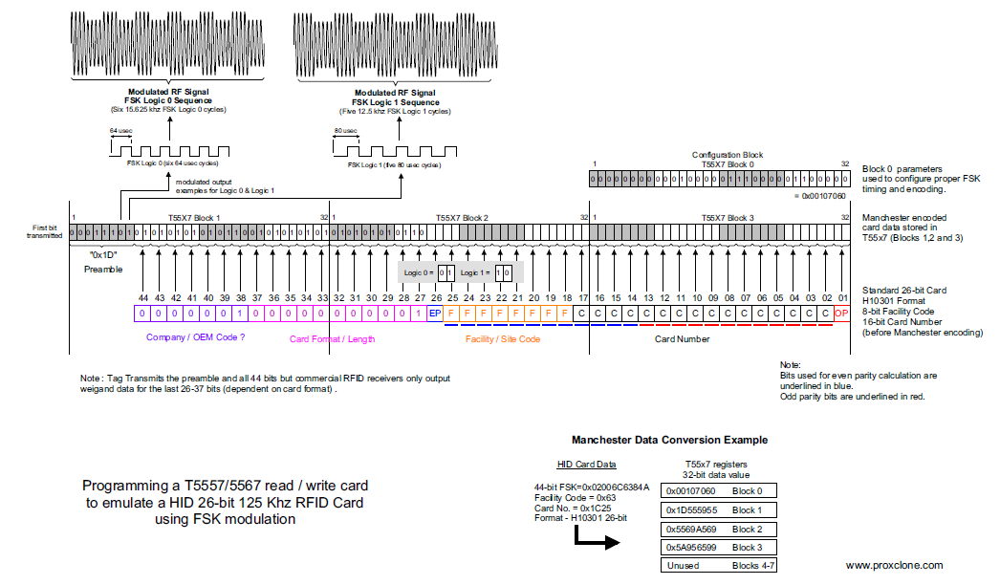
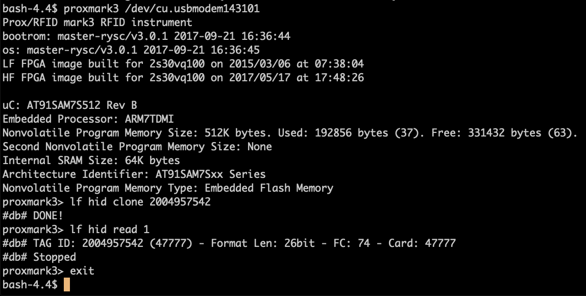

Emulating an HID Proxcard from Facility Code and Card Number
./john
I forgot my wallet yesterday so I didn't have my access card when I got to work. Fortunately, I know the facility code and card number for my access card. I hadn't done this before, but I wanted to write a new card for myself using the Proxmark. Here was my approach.
First I had to remember what the facility code and card number for my
access card were. In my case, I was lucky enough to have a picture of
my access card with the information on it. For the sake of
explanation, let's assume my Facility Code is 74 and my card number
is 47777.
After gathering that information, I had to figure out the exact specification for 26bit HID ProxCards. Fortunately HID has a lot of detailed information on their site. This reference was very useful. I ended up referencing this diagram very carefully.

Figure 1: 26-Bit Wiegand Public Format
I wasn't entirely sure, but I just assumed the format for our cards as going to be "standard." So the next step was to convert my card data into that format.
Format: P FFFFFFFF NNNNNNNNNNNNNNNN P Decimal: 0 76 47777 0 Binary: 0 01001010 1011101010100001 0
The parity bits are a simple way to check the integrity of the data. The leading parity bit is even. That means the bit should be set such that the total number of bits in the associated block is an even number. The trailing parity bit is the opposite. There are two blocks and two parity bits. The first 13 bits are the first block and the last 13 bits are the second block.
Format: P FFFFFFFFNNNN NNNNNNNNNNNN P Binary: 0 010010101011 101010100001 0 Parity: 0 01001010 1011101010100001 0
The first 13 bits have 6 1-bits, so the even parity bit should be
0. The ending 13 minutes have 5 1-bits, so the odd parity bit should
be 0.
Now we need to convert the binary number into a tag id that works with Proxmark. The details of this get a little complicated since we're emulating an HID card using a generic T5577 re-writeable card. There a lot of details here. This is the particular diagram that's extremely helpful for this case.

Figure 2: T5577 26-Bit Weigand / HID Emulation
The whole stream is 44 bits in length where the bits that we computed above would be all the way at the end.
Reference: 0000001 00000000001 P FFFFFFFF NNNNNNNNNNNNNNNN P Binary: 0000001 00000000001 0 01001010 1011101010100001 0 Binary: 10000000000100100101010111010101000010 Decimal: 137515857218 Hex: 2004957542
The final result here is a 38 bit number. In order to make my new
card, I'll have to take this 38-bit Tag Id and use Proxmark to write
that information to a new T5577 card. The command I'm using is lf hid
clone 2004957542. Here is a screen shot of me cloning the tag and
also verifying that the data matches the FC and Card Number that I
expected.

Figure 3: Using Proxmark
At this point, my card works and I can go in and out of the office. I suppose it would have been easier to borrow someone else's card, but not quite as fun.